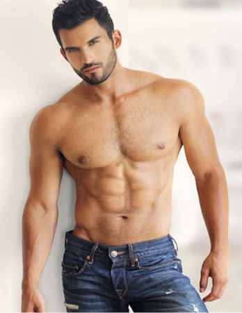

首页
减脂塑形
增肌增重
训练计划
健身食谱
新闻资讯
论坛图库
登录
注册
当前位置:新闻资讯个人区

"这是一个看脸的时代，一句网友的调侃
但说的不是事实，或者说并不完全这样，女人拥有一个漂亮的脸蛋可以说是天生丽质，但对于
男人，漂亮的面孔并不是吸引女人的地方，调查显示，相随与男人 漂亮的面孔运城的身材而言女人更倾向于后者"健身运动的动作方式是多种多样的，既
有成套的各种徒手健美体操也有球、棒等轻器械体操，这些主要用于女子健美训练，借以减肥和改善体形体态，提高灵活性，增强韵律感；更有许
多能 发达身体各部位肌肉的举重练习动作和其它动作。这些动作主要用于男女强壮体魄、发达肌肉，也用于男女健美训为了达到形体健美的目的，
需要有专门的训练方法。例如采用杠铃等举重器械做各种动作时，在器械的轻重、动作的
做法，安排的组数、次数，运动的速度等方面都有
特殊的
要求和安排
"这是一个看脸的时代，一句网友的调侃
但说的不是事实，或者说并不完全这样，女人拥有一个漂亮的脸蛋可以说是天生丽质，但对于
男人，漂亮的面孔并不是吸引女人的地方，调查显示，相随与男人 漂亮的面孔运城的身材而言女人更倾向于后者"健身运动的动作方式是多种多样的，既
有成套的各种徒手健美体操也有球、棒等轻器械体操，这些主要用于女子健美训练，借以减肥和改善体形体态，提高灵活性，增强韵律感；更有许
多能 发达身体各部位肌肉的举重练习动作和其它动作。这些动作主要用于男女强壮体魄、发达肌肉，也用于男女健美训为了达到形体健美的目的，
需要有专门的训练方法。例如采用杠铃等举重器械做各种动作时，在器械的轻重、动作的
做法，安排的组数、次数，运动的速度等方面都有
特殊的不过，自己锻炼有一个看似小其实很严重的问题：自我促动。在家里的话，根本没有教练来督促你。所以你最好自行购置体育设备，这些设备
的发票就是最好的敦促。你也可以自己动身做一些简单的练习器材。比如在车库里做沙袋和快球。可以买跳绳。建议买一把长竟，最好是可以加高的那种，
带有一个斜面。当然，哑铃等的重物最好还是乖拘钱买一个质量好点的。最好能够购买可牢固在铁杠上的一套铁块或者哑铃。这套铁块每次增加1千克，
分别有1千克、5千克、10千克、15千克的。这些铁块都应该有较好的接头，可快速更换。